「プラハは写真家の楽園である。
世界中でこれほど魅力のある都会を知らない。」
これは、写真家の田中長徳氏の言葉です。氏はさらに続けます。「それは巨匠ヨゼフ・スデクの仕事が示している。千年の古都を今に歩行して写真を撮影できるのは奇跡のようなものだ。」
この言葉に惹きつけられるように我々三人は、2014年、ドイツに続いてプラハを訪れました。
ドイツ数都市の後、我々はこの「奇跡」とはなにかを自分たちの目で確かめるべくプラハの街へ足を踏み入れたことを覚えています。
ところで、前日のニュルンベルクからはバスが便利だとネットに書いてあったので素直に従いましたが、やはり先人の言葉は偉大、ほぼ高速道路で快適でした。
列車だとかなり北回りで、多くの人がこのバスを利用する意味がわかりました。（このときはまだ帰り道で大事になるとは思いもしませんでした）
＊あくまで2014年の話なので今どうなのかご存じの方教えて下さい。
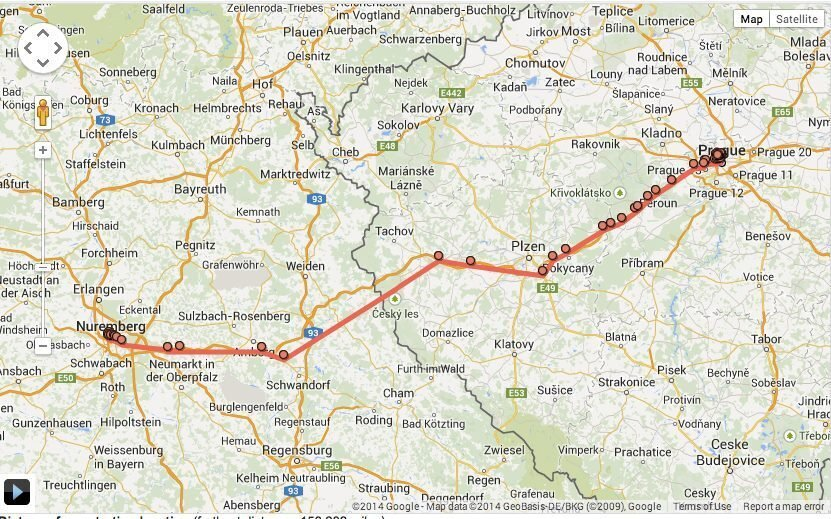
無事予約していたカレル橋 徒歩1分のホテルにチェックイン、三泊四日の予定でしたが最終的に一日早めて戻ったことを思い出しました。
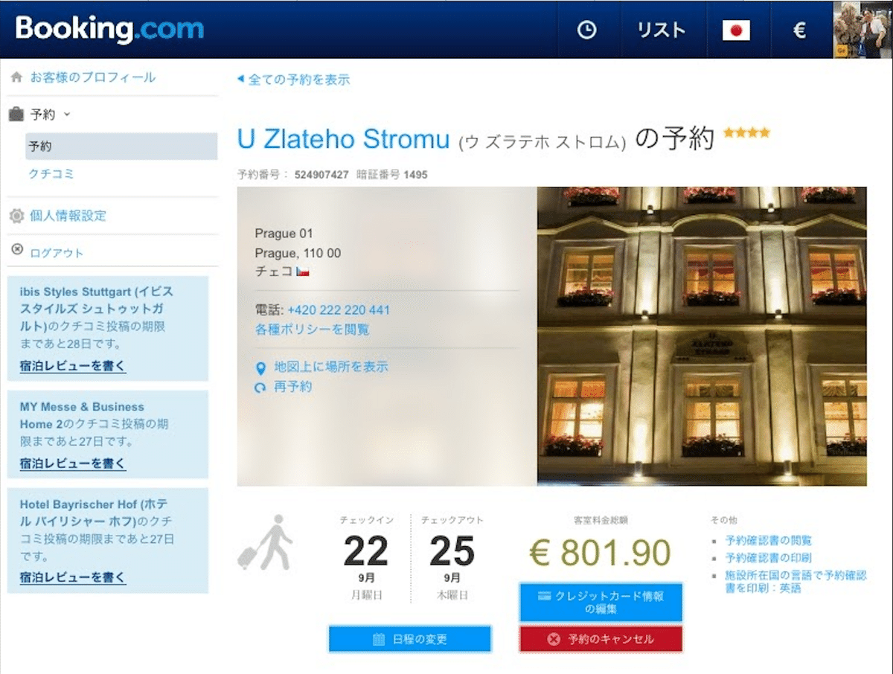
翌朝 朝靄に包まれたプラハ城が、カレル橋越しに姿を現す瞬間。黄金色に輝く太陽の光が、ヴルタヴァ川の水面を染め上げます。その光景を目にした時、心が震えました。時が止まったかのような静寂の中、歴史の重みと美しさが交錯します。
ファインダーを覗き込む私の指が、必死でシャッターを切りました。
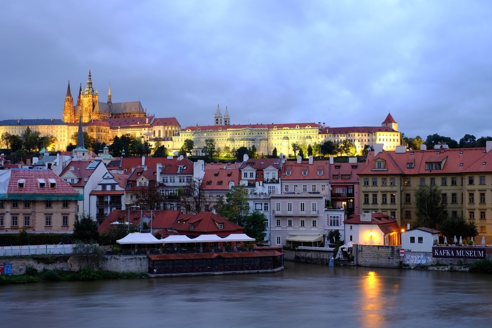
ドイツの街々も魅力的でした。古城や歴史的建造物が、現代的な建物と共存する景観。新旧が融合した都市の姿は、それはそれで興味深いものでした。
しかし、プラハに一歩足を踏み入れた瞬間、全く異なる世界に迷い込んだような感覚に襲われました。ここには、写真に収めたくなる被写体が無数に存在しています。
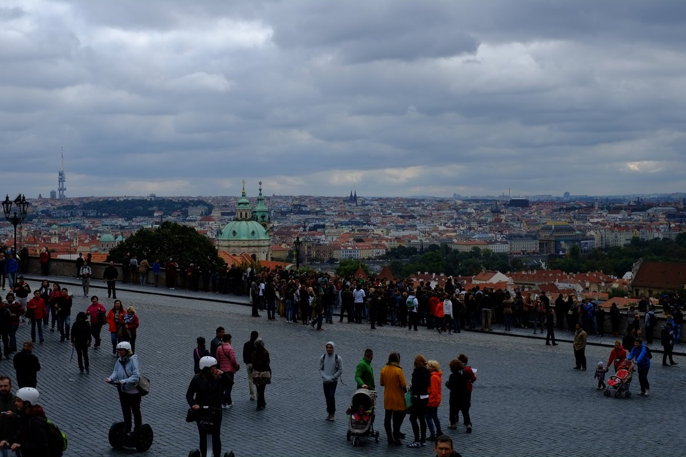
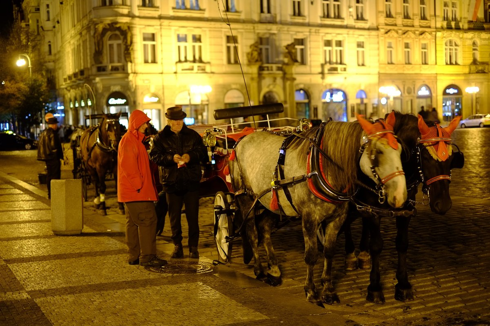
プラハの街並み、特に旧市街は、まるで何百年もの時を超えてそのままでした。第二次世界大戦の被害をほとんど受けなかったこの街は、中欧で最もよく保存された都市の一つと言われています。その景観は、単なる観光資源ではなく、生きた歴史書のようです。
我々はその歴史の一ページ一ページを丁寧に記録したことを覚えています。
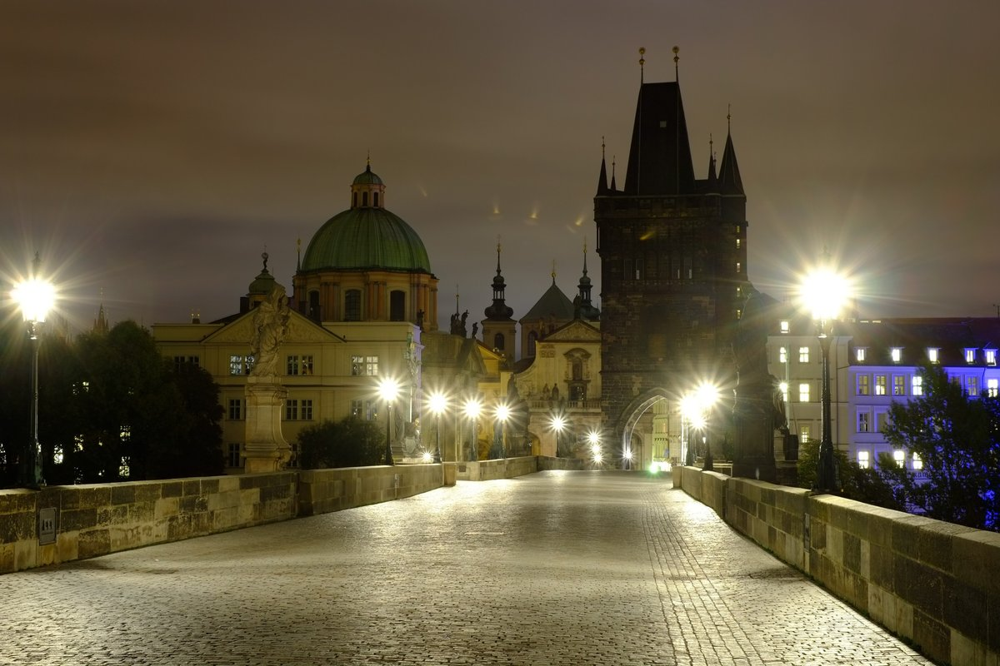
カレル橋を歩けば、中世の石畳を踏みしめます。橋の上に立つ聖人像たちが、何世紀もの間見守ってきた風景を自分の目で確かめることができます。その瞬間、歴史の一部になったような感覚に包まれます。
レンズを通して見るそれらの像は、まるで語りかけてくるかのようでした。
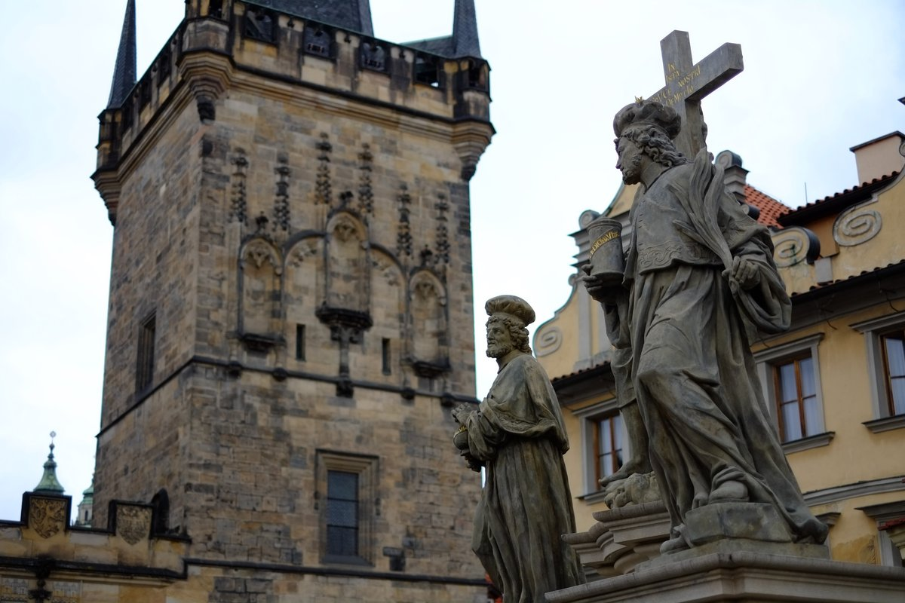
そして、早朝のカレル橋で目にしたファイアーショーは、忘れられない体験でした。朝日が昇る前の薄暗い空を背景に、大道芸人の操る炎が描く軌跡が、幻想的な世界を作り出します。橋の石畳に映る揺らめく光、静寂を破る炎の音。
歴史ある橋の上で繰り広げられる現代的なパフォーマンス。それは、プラハという街の本質を象徴しているようでした。
シャッタースピードを遅くして、炎の軌跡を一枚の写真に収めようと試みました。
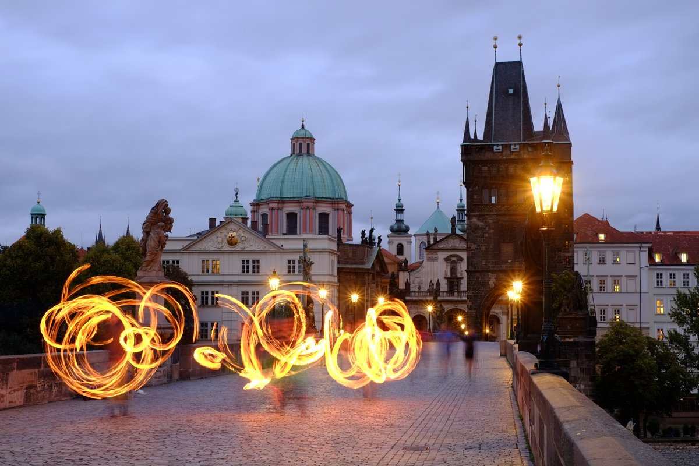
旧市街広場では、600年以上の歴史を持つ天文時計の仕掛け人形に目を奪われます。周囲の建物も、まるでタイムスリップしたかのような佇まいです。しかし、プラハは決して時間が止まった街ではありません。広場に集う人々の笑顔や活気が、現代の息吹を感じさせてくれます。
古いものと新しいものの共存する瞬間だと感じました。
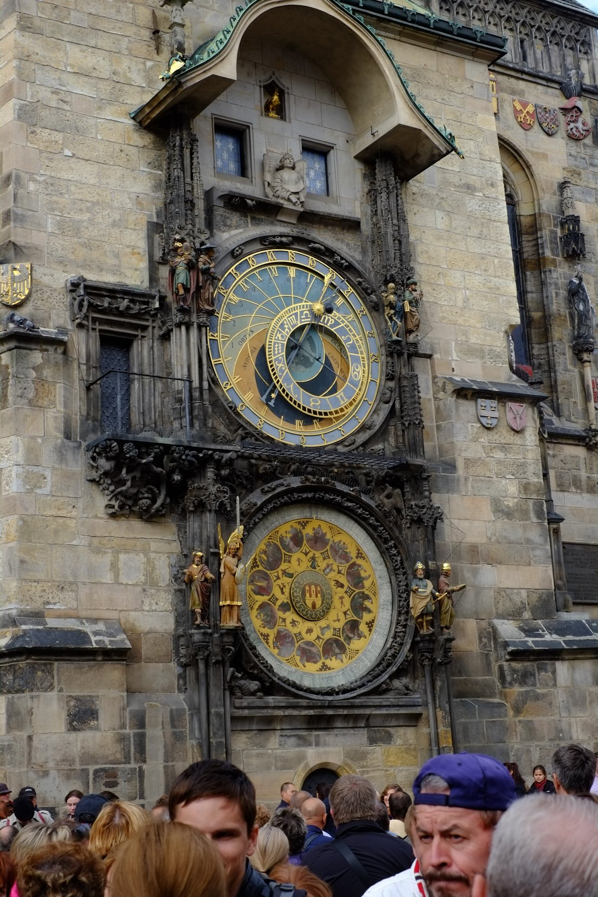
プラハ城の中にあるスターバックス。これこそが、プラハの新旧融合を象徴する場所かもしれません。
1000年の歴史を持つ城の一角に、現代的なコーヒーチェーンが居を構えています。
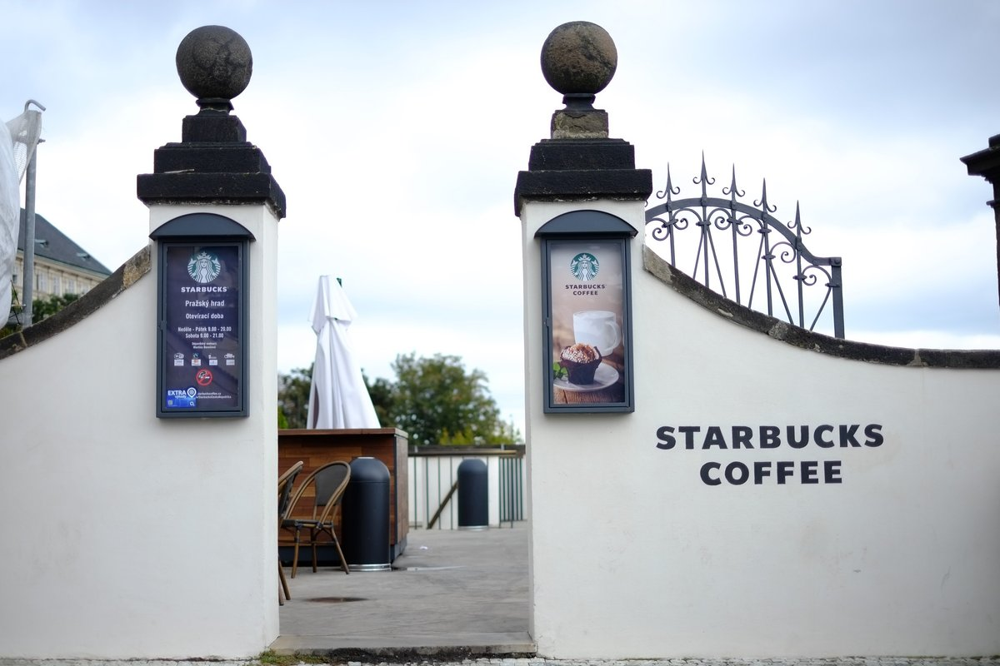
窓際の席に座れば、プラハの街を見下ろす絶景が広がります。現代的なラテを手に、中世の景色を眺める。この不思議な体験こそ、プラハの魅力そのものです。コントラストの効いたこの光景を、どう切り取るべきか考えながらシャッターを切りました。
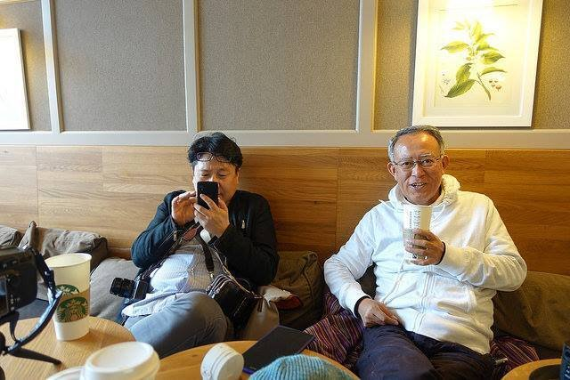
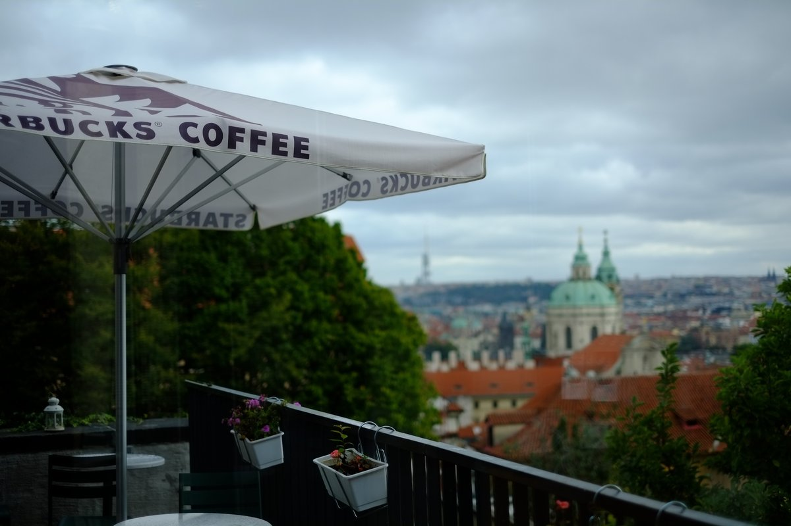
確かに、プラハも時代とともに変化しています。特に旧市街の外では新しい建築物も見られ、観光産業の発展と歴史的景観の保存のバランスを取ろうとする努力が感じられます。しかし、その変化の中にあっても、プラハは「生きている博物館」としての魅力を失っていません。古いものを大切に保存しながら、必要に応じて新しいものを受け入れる。その絶妙なバランス感覚が、プラハを特別な街にしているのかもしれないですね。
本当ならもう一日滞在するはずだったのですが、天候の関係だったか最終日のフライト時間に遅れるのが怖かったのかとにかく滞在を一日早めてフランクフルトに戻ったのでした。
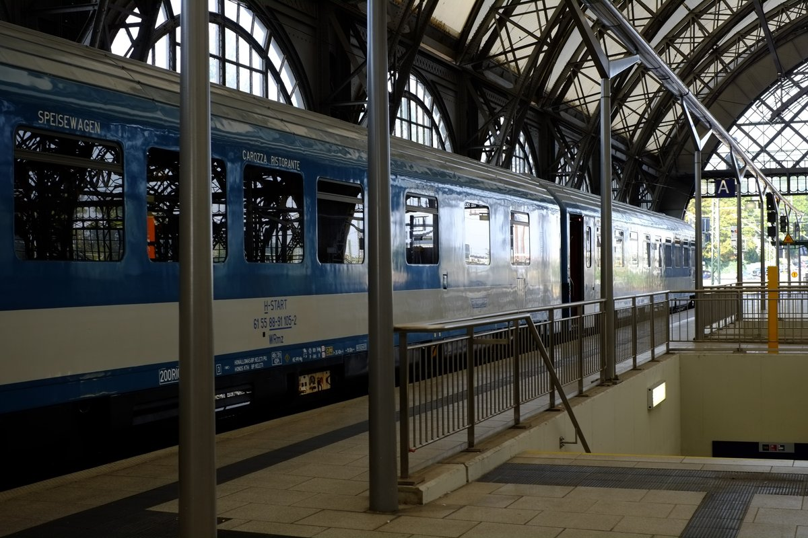
ただ行きと同じバスが一杯で、しかたなく列車で戻ったのですが、プラハからドレスデンまでの列車が遅れて10時間ほどかかったと記憶しています。
下の地図を見ると判りますが、線路がエルベ川に沿ってグネグネ曲がっていたのには驚きました、時間がかかるわけです。
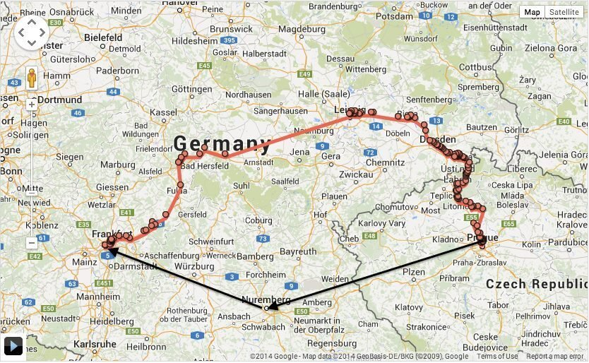
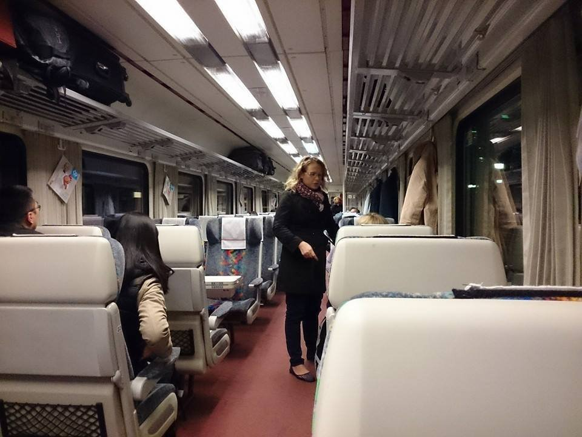
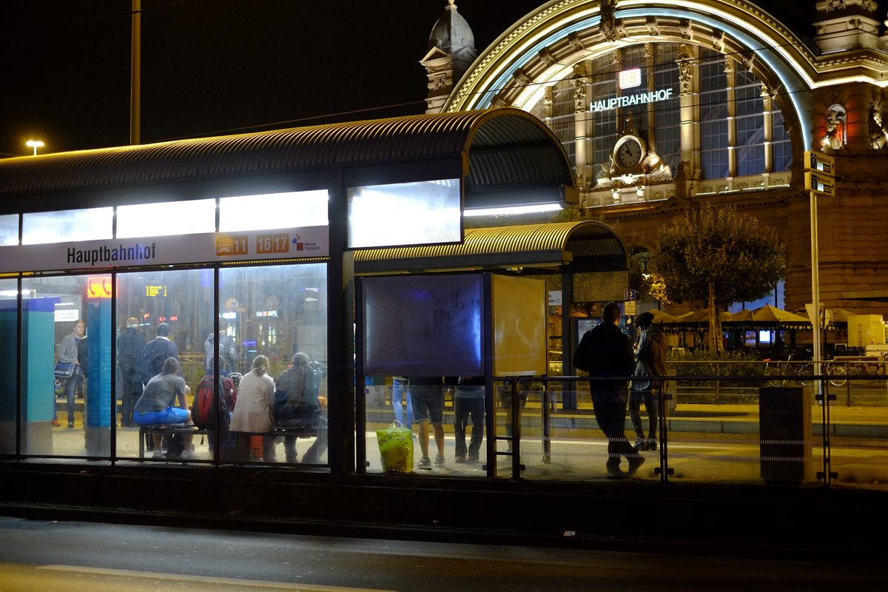
そして今、プラハでの日々を振り返り、私は田中氏の言葉の真意を理解できた気がします。
確かに、プラハは写真家の楽園でした。しかし、それは単に美しい被写体が多いからではありません。
プラハの「奇跡」とは、時間を超越した美しさなのです。カレル橋の上で見た朝日、旧市街広場の天文時計、プラハ城の威容。これらは何世紀もの時を経ても、なお息づいています。
現代の喧騒の中に、過去の安穏が共存している。それこそが、ヨゼフ・スデクが捉え、そして私も少しですが感じ取ることができた「奇跡」なのでしょう。